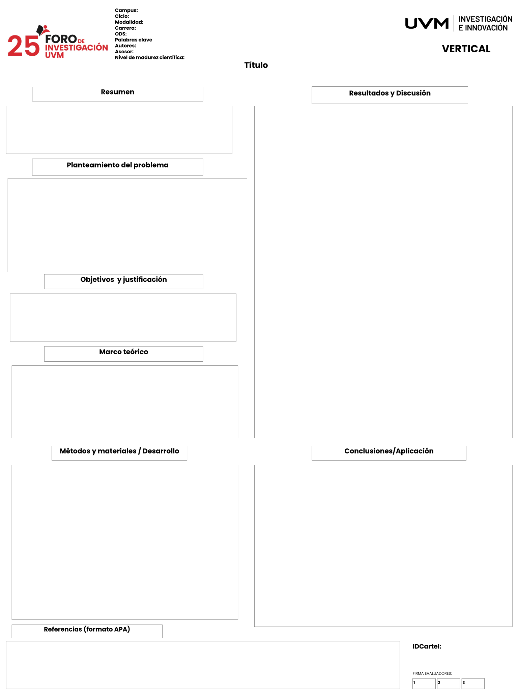

Haz clic dentro de cualquier cuadro del cartel para escribir.
Preparando el cartel...

Tus cambios se guardan temporalmente en este navegador si el almacenamiento está disponible. Puedes agregar hasta cuatro imágenes por sección con ＋ Imágenes, Ctrl + V o arrastrándolas al cuadro de texto. Al terminar utiliza Descargar PDF para guardar tu cartel, o Imprimir para enviarlo a una impresora.